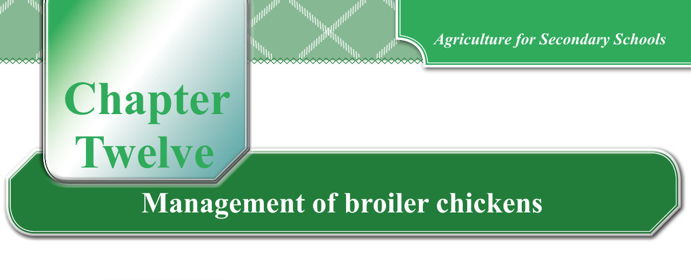

Chapter Twelve. Management of broiler chickens
Management of broiler chickens from DOC to slaughter point
Chickens that are raised specifically for meat are termed broilers. Commercial broilers are preferably raised from day one up to 3 - 8 weeks of age when they attain market weight (1.5 - 2 kg). The type of chicken breed you should keep depends on your area’s demand and the availability of the DOC. The weight of the chicken you want to sell should also be based on market demand. The larger the chicken, the more it can be sold, as it provides more meat.
Management of brooder for broiler chickens
Prepare the brooding house for the DOC well before the arrival of the chicks in a similar way as that of raising layer chicks. During the rearing period, provide 23 hours of light and 1 hour of darkness so that they are not stressed in case of power failure. The preferred stocking rate is 10 - 12 birds per m2 for the birds expected to grow to about 1.5 - 2.5 kg market weight. The birds are fed ad libitum throughout the rearing period.